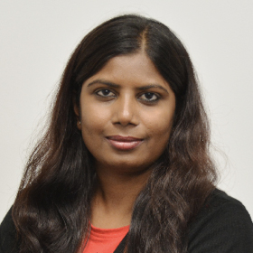

| Lab SKU | Lab Title | Description | Lab Family |
|---|---|---|---|
| HOL-1851-01-MBL | Horizon 7 Enterprise - Getting Started | Learn about the new features of Horizon 7.1 and understand the components of the Just-in-time Management Platform (JMP). This platform uses Horizon Instant Clones to quickly provision VDI desktops and RDS Host, App Volumes to instantly provision applications, User Environment Manager to provide a context based user experience, and Workspace One to launch solutions. | Application and Desktop Virtualization Labs |
| HOL-1851-02-MBL | Horizon 7 Instant Clones | Discover how Instant Clones technology fits into the Just-in-time Management Platform (JMP). Work with RDS Host Farm Provisioning and Desktop Pool Provisioning with Instant Clones. Explore operational topics such as pool updates and maintenance. | |
| HOL-1851-03-MBL | VMware App Volumes - Getting Started | Provision applications using AppVolumes as part of the Just-in-time Management Platform (JMP). Learn how applications are captured, managed and entitled. Explore user installed applications and persona management with the AppVolumes Writable Volume. Advanced design topics such as scalability and storage considerations are also covered. | |
| HOL-1851-05-MBL | VMware Workspace One and VMware Horizon 7 | Learn about VMware Workspace One and how it can be used to simplify access to VMware Horizon 7 Applications and Desktops. VMware Identity Manager can deliver Horizon Applications and Desktops, ThinApps, and SAML based web applications. Multi-factor authentication enhances security. | |
| HOL-1851-08-MBL | Horizon 7.1 - Advanced Topics | Exercise the common architectural concepts and considerations used to design a robust Horizon environment. Design multi-site and large scale implementations, while providing a robust end-user experience. Examine Load balancing, Cloud Pod Architecture, and user remote experience. | |
| HOL-1801-02-CMP | vRealize Suite Standard - Automated and Proactive Management | vRealize Operations works in conjunction with vSphere to automatically balance workloads between hosts both within and across clusters to alleviate existing or predicted resource contention. Also learn about the vRealize Operations action functionality that allows alert-driven automated remediation of problems. | Cloud Management Platform Labs |
| HOL-1801-03-CMP | vRealize Suite Standard - Manage the SDDC | Use vRealize Operations and vRealize Log Insight to troubleshoot issues, look for performance improvements, avoid disruption, and proactively manage the Software Defined Data Center (SDDC) with integrated performance and health monitoring across compute, network, storage and applications. | |
| HOL-1821-01-CMP | vRealize Automation 7 - Getting Started | See the basic features of vRealize Automation. Whether you’re interested in blueprinting and IaaS provisioning, the powerful lifecycle and governance engine, or just want an introduction to core concepts, this is a great place to begin your journey. | |
| HOL-1821-02-CMP | vRealize Automation 7 - Advanced Topics | Learn all about the advanced capabilities of vRealize Automation. This deep-dive covers more complex service authoring capabilities, including new NSX integration capabilities, creating applications using Containers, vRealize Automation Health Monitoring and much more. | |
| HOL-1821-05-CMP | vRealize Orchestrator - Getting Started | Use vRealize Orchestrator to simplify the automation of IT tasks. Explore the vRealize Orchestrator development environment and learn important development concepts by building and testing basic workflows, then put those workflows to use inside vRealize Automation to create reusable processes. | |
| HOL-1806-01-CMP | vRealize Suite - Getting Started | Walk through the integration points of the vRealize Suite, including vRealize Operations, vRealize Automation, vRealize Business for Cloud, and Log Insight. The vRealize Code Stream Management Pack demonstrates how to keep multiple environments synchronized. These powerful individual components work even better together, with less time, cost, and effort. | |
| HOL-1830-02-CNA | vSphere Integrated Containers - Getting Started | Containers provide a small footprint via the Docker platform and ease of application packaging and sharing. Many organizations are now struggling with how to deploy these applications in production. VMware Integrated Containers (VIC) provides the best of both worlds. You can use the container form factor and they look and behave just like virtual machines. Use familiar tools and workflows to manage these new workloads. Explore the VIC platform and two other VMware open-source tools for easing container management. Harbor is an enterprise class registry server for docker images. Admiral is a lightweight Container Management platform for deploying and managing applications. | Cloud Native Applications |
| HOL-1820-01-EMT | VMware Integrated OpenStack (VIO) - Getting Started | Get started with VMware Integrated OpenStack (VIO). See how you can use vSphere and NSX with Openstack Ocata. | Emerging Technologies |
| HOL-1808-01-HCI | vSAN v6.6 - Getting Started | VMware vSAN is a radically simple, enterprise-class shared storage solution for hyper-converged infrastructure optimized for today’s all-flash performance. Learn how easy it is to enable VSAN and use it to store your VMs. Also, explore VSAN's features including data-encryption at rest, deduplication and compression, RAID 5/6 erasure encoding, stretched-clustering enhancements & iSCSI Target support. | Hyper-Converged Infrastructure Labs |
| HOL-1803-01-NET | VMware NSX - Getting Started | VMware NSX is the premier platform for network virtualization. You will gain hands-on experience with Logical Switching, Distributed Logical Routing, Dynamic Routing, Distributed Firewall and other Logical Network Services. | Network Virtualization Labs |
| HOL-1803-02-NET | VMware NSX - Distributed Firewall and Micro-Segmentation | Learn more about VMware NSX and Micro-Segmentation, including in-depth reviews of the Distributed Firewall, Service Composer UI and Application Rule Manager. Collapse a segmented network, intelligently group servers, micro-segment an application and implement user based security. | |
| HOL-1825-02-NET | VMWare NSX and SRM - Active-Standby Solution | Cross-VC NSX resolves some of the difficult challenges faced by traditional disaster recovery solutions such as changing of networks and IP addresses and synchronizing security policies. You will simulate a full 3-Tier application failover from Primary Site to Protected site with minimal changes to the environment. | |
| HOL-1829-01-NET | vRealize Network Insight - Getting Started | Explore the functionality of vRealize Network Insight (vRNI) through use case scenarios. Discover how vRNI helps with micro-segmentation, compliance, optimizing network performance across networks, ensuring health and availability of NSX, and management of AWS networking. | |
| HOL-1805-01-SDC | Site Recovery Manager - Data Center Migration and Disaster Recovery | Learn all you need to know about VMware Site Recovery Manager (SRM). Fail over a Virtual Machine, execute a Disaster Recovery plan, automate Site Recovery Manager tasks with vRealize Orchestrator, integrate SRM with NSX and Storage Policy Based Protection Groups and Stretched Storage, and dive into other advanced topics. | Software Defined Data Center Labs |
| HOL-1811-01-SDC | vSphere v6.5 - What's New | Explore some of the new features of vSphere 6.5 including VM Encryption, vCenter High Availability, and the new HTML5 vSphere Client. You will also learn about the improved vCenter Server Appliance and how to migrate from a Windows-based vCenter Server installation. | |
| HOL-1811-02-SDC | vSphere with Operations Management - Getting Started | Explore the capabilities of vSphere with Operations Management (vSOM). Learn key vSOM features, and their use cases. Deploy and manage upgrades, migrations, availability, workload performance and log management. This is an excellent place to begin your experience with VMware vSphere with Operations Management! | |
| HOL-1845-01-SLN | Modernize Infrastructure - Build Your Own SDDC | The VMware Software Defined Data Center (SDDC) delivers value through modernized infrastructure. Discover the process and requirements to extend compute, storage, and network virtualization across the data center and add intelligent operations management. | Solution Labs |
| HOL-1806-02-SLN | Automate IT - Make Private Cloud Easy | SDDC use cases for automating the delivery of IT services using vRealize Automation. You will automate the deployment of application-centric networking and security with NSX and application-centric storage and availability through integration with SPBM. You will also extend your private cloud to integrate with existing IT tools. | |
| HOL-1844-01-SLN | Modernize Infrastructure - VMware Cloud Foundation | VMware Cloud Foundation (VCF) provides a simple way to deploy and operate a private cloud using the VMware unified SDDC platform. You will learn how to deploy VCF on a privately managed infrastructure, image a new physical rack, and perform the "bring-up" process for a VCF setup. You will also do multiple configuration changes to an installed VCF instance. | |
| HOL-1857-01-MDM | VMware AirWatch - Getting Started | Enable your organization with the power of mobility by starting with the basics. Create a device policy, then get hands on with an iPad and enroll the device into your newly configured environment. Remotely wipe the enterprise settings from the device leaving any private and personal data completely intact. | Unified End-point Management Labs |
| HOL-1857-02-MDM | VMware AirWatch - Unified Endpoint Management for Windows 10 | VMware AirWatch features a new and more efficient approach to Windows lifecycle management across any use case. Deploy OSs to remote workers, onboard employee’s BYO machines, deploy across your branch offices and manage special lines of business terminals. | |
| HOL-1857-03-MDM | VMware AirWatch with Workspace ONE | Looking for the latest on the VMware Workspace ONE solution? Integrate VMware AirWatch and VMware Workspace ONE to enable Single Sign-On from any device to any application, and deploy applications through Workspace ONE. |
SUCCESS depends not only on having industry-leading technology, but also on having the knowledge and skills required to implement it. With training and certification, you can …
The courses are designed to hone and validate your skills on the latest VMware technologies and solutions.
The certification exam provides a convenient way to re-certify or earn a new VMware certification.
Whether you choose an instructor-led class or online and video training, these courses will prepare you for real-world success and VMware Certification.
Take advantage of our discounts to save up to 50% on certification exams and 25% on on-demand training.
Take advantage of the vFORUM 2017 training and certification program to build the skills and experience to design, deploy and operate your VMware platform. Learn more about the available training courses and exclusive certification exam discounts.
Explore Education ServicesVisit the Education Services booth and find out how you can make the most of your vFORUM 2017 experience!
TAKE advantage of these special training and certification offers to hone and validate your skills on the latest VMware technologies and solutions:
Visit the Education Booth and find out how!
COLLECT your very own limited edition vFORUM 2017 Certification Pins. Just show a screen capture of your valid certification and collect your pin at the Education Booth. To obtain the screen capture, go to: https://goo.gl/WgfKhm
While stocks lasts.
JOIN the VMware Certified Instructors and Certified Experts in the following Discovery Sessions. This promises to be an exciting, interactive session where presenters will not only be sharing their knowledge, but also doing live demonstrations, whiteboarding and answering all your questions.
Limited seats available at the Sessions – Be there early to avoid disappointment!
14 November 2017
VCI, VCP-NV, CCIE
Suma G
Suma has more than 13 years experience as a network engineer with strong technical knowledge and customer focus. She specializes in the NSX platform. Her skill sets include Cisco products and protocols.
VCIX-DCV, VCIX-NV, VCP DT, VCI

Mohammad Habeeb Hussain
Habeeb is a Senior VMware Certified Instructor with over 10 years of experience and is responsible for delivering, developing, and maintaining technical courses for VMware distributors, channel partners, customers, and internal employees. A solution consultant at heart, he has enjoyed different roles in IT-industry and worked for HP, Dell and VMware India.
VCP#98, VCDX#42

Michael Francis
Michael is an IT Industry veteran with over 20 years in this space. Michael has worked in public and private sectors in leading architect roles that typically involve significant transformation.
Michael’s passion is innovation and today works in our Professional Services Engineering business developing architectures and tools that VMware Professional Services uses to deliver solutions to our customers. Michael has presented at multiple VMWorld events over the years as well as many vFORUM events in Australia and Singapore. He is also a foundation member of his local VMware User Group where he presents and attends regularly.
21 November 2017
VCP6-DCA, VCP6-CMA and VCAP6-DCA, VCI

Bharath N
Bharath has an more than 5 years experience at VMware as a Technical Support Engineer, and now a Senior Training Specialist. He specializes in vSphere, and vRealize Automation.
VCIX-DCV, VCIX-NV, VCP DT, VCI
Mohammad Habeeb Hussain
Habeeb is a Senior VMware Certified Instructor with over 10 years of experience and is responsible for delivering, developing, and maintaining technical courses for VMware distributors, channel partners, customers, and internal employees. A solution consultant at heart, he has enjoyed different roles in IT-industry and worked for HP, Dell and VMware India.
21 November 2017
VCP 5,VCP 6 and VCAP 6, VCI

Dipankar Sinha
Dipankar Sinha is a Senior Technical Trainer at VMware and is passionate about all aspects of the SDDC stack, the cloud and specializes in storage and disaster recovery solutions. His current passions include all VMware solutions encompassing SDDC/SDS like vSphere, vSAN, VVOLS, site recovery manager. He is also an advocate of automation using VMware PowerCLI and Python.
VCIX-DCV, VCIX-NV, VCI

Murali Krishna
Murali Krishnan is a VMware Certified Instructor for vSphere, NSX & vSAN covering the ASEAN region. He has more than 10 years experience in IT as a Trainer, Consultant, Engineer involved in Designing, Implementing, Testing and Troubleshooting Real-time Projects.
He has trained countless professionals in Systems & Network Administration, Virtualization, Cloud Computing, Big data & Information Security. Participates include those from government, public and private sectors.
21 November 2017
VCP#98, VCDX#42
Michael Francis
Michael is an IT Industry veteran with over 20 years in this space. Michael has worked in public and private sectors in leading architect roles that typically involve significant transformation.
Michael’s passion is innovation and today works in our Professional Services Engineering business developing architectures and tools that VMware Professional Services uses to deliver solutions to our customers. Michael has presented at multiple VMWorld events over the years as well as many vFORUM vents in Australia and Singapore. He is also a foundation member of his local VMware User Group where he presents and attends regularly.
28 November 2017
VCIX-DCV, VCIX-NV, VCI
Chand Basha
A Senior Technical Training Specialist at VMware, Chand has more than 10 years of experience specialized in implementing, supporting and designing VMware Technologies. They include vSphere, VIO, vSAN, NSX-T, NSX-V, etc., in the Software Defined Data Center.
VCIX-DCV, VCIX-NV, VCI
Murali Krishna
Murali Krishnan is a VMware Certified Instructor for vSphere, NSX & vSAN covering the ASEAN region. He has more than 10 years experience in IT as a Trainer, Consultant, Engineer involved in Designing, Implementing, Testing and Troubleshooting Real-time Projects.
He has trained countless professionals in Systems & Network Administration, Virtualization, Cloud Computing, Big data & Information Security. Participates include those from government, public and private sectors.